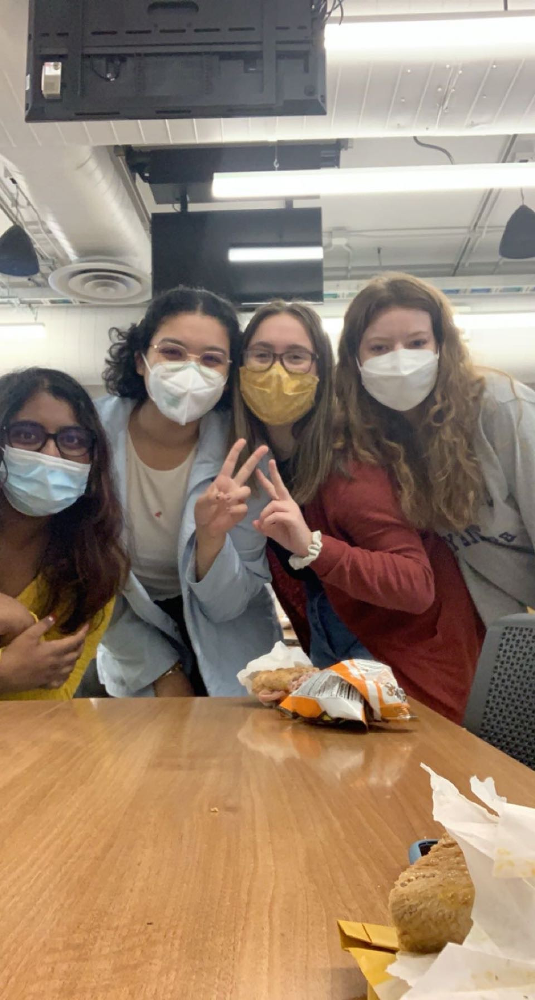

The Importance of Women in Computing to my College Career

As a female computer science major it is very easy to feel alone in my classes. I walk into a room of 60 and maybe 4 are female, and that number usually decreases towards the drop date. But one thing I have always noticed, especially as I began TAing in person this semester - those female students, more often than not, gravitate towards one another in class. We find it easier to create bonds with each other, and navigate this degree as a whole. That is why I love being part of Women in Computing, and have been since my freshman year. It’s a club with the sole goal of recruiting and sustaining women in computing fields - a place where people in the major can go and feel supported and united. I have met my best friends through these meetings and I got my internships and subsequent full time job through a conference that was funded by the club. So you could definitely say that Women in Computing has been very beneficial to my college career. I believe that any efforts to encourage minority groups to pursue computing and engineering will be extremely beneficial in the long run, because the more diversity you have, the better perspectives you can build upon.